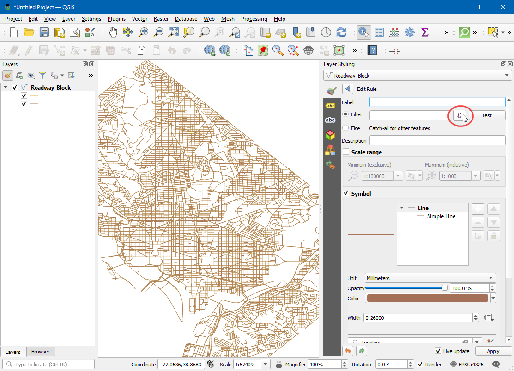
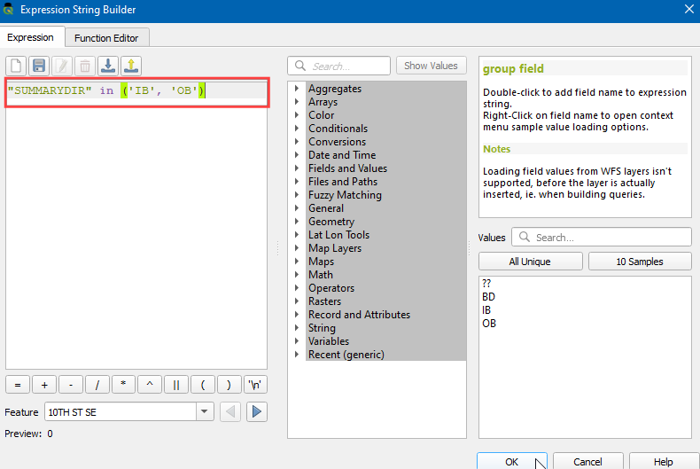

Visualización y Enrutamiento Básico de Red (QGIS3)¶
Crear, visualizar, y administrar redes es una parte importante del SIG. Varios tipos de infraestructura física como caminos, ferrocarrilles, servicios públicos pueden ser modelados como redes con líneas y nodos - con propiedades adjuntas a ellas. En este tutorial, aprenderemos cómo las redes de caminos son comúnmente modeladas y aplicaremos algunas técnicas de estilo para visualizar las propiedades de enrutamiento. También usaremos herramientas incorporadas de QGIS3 para el análisis de red para encontrar la ruta más corta entre 2 puntos a lo largo de la red.
Vista general de la tarea¶
Tomaremos una capa de bloque de calzada para Washington, DC, visualizaremos la conectividad y construiremos una red para encontrar la ruta entre 2 puntos cualquiera en la ciudad.
Otras habilidades que aprenderá¶
Cómo usar una desautorización definida por datos para alinear una símbolo de flecha basado en la dirección de línea.
Obtener los datos¶
El gobierno del Distrito de Columbia comparte libremente cientos de conjuntos de datos en el Catálogo de Datos Abiertos.
Descargue el Bloque de Calzada compartido por datos DCGISopendata como un archivo shape.

Para su comodidad, puede descargar directamente una copia de los conjuntos de datos de los enlaces abajo:
Fuente de Datos: [DCOPENDATA]
Procedimiento¶
Localice el archivo descargado
Roadway_Block-shp.zipen el panel Explorador. Expándalo y arrastre el archivoRoadway_Block.shpal lienzo.

Verá una nueva capa de líneas llamada
Roadway_Blockañadida al panel Capas`. Esta capa representa cada carretera de Washington DC. Seleccione la herramienta Identificar en la barra de herramientas Atributos. Haga clic en cualquier segmento de carretera para ver qué atributos tiene asociados. Hay atributos estándar como el nombre de la ruta, el tipo de carretera, etc. Hay un atributo llamadoSUMMARYDIR. Este es un atributo importante para el enrutamiento, ya que especifica si el segmento es de doble sentido o unidireccional. Contiene 4 valores diferentes.BD(Both Directions) para calles de doble sentido.OB(Out Bound) para calles unidireccionales donde el tráfico se permite en la dirección de la línea (punto de inicio a punto final) yIB(In Bound) para calles unidireccionales donde el tráfico fluye en la dirección opuesta a la línea. También existe el valor??en el que supondremos que el tráfico es bidireccional. Ahora utilizaremos la información de ese atributo para mostrar una flecha en las calles de sentido único.

Clic el botón Abrir el Panel de Estilo de capa en el panel Capas. Seleccione el representador
Basado en reglasdel menú desplegable.

Crearemos un nuevo estilo con un filtro sólo para las vías en un solo sentido. Clic el botón Añadir regla +

En el diálogo Editar regla dialog, clic el botón Expresión.

En el diálogo Constructor de la cadena de expresión, expanda la sección Campos y Valores en el panel del medio. Seleccione el atributo
SUMMARYDIRy clic All Unique en el panel a mano derecho. Los 4 valores que discutimos antes aparecerán. Teniendo estos valores aquí como una referencia ayuda cuando se construye la expresión. También, puede hacer doble-clic en cualquier valor para añadirlo a la expresión.

La meta es crear una expresión que selecciona todas las calles en un solo sentido. Ingrese la siguiente expresión y clic Aceptar.
"SUMMARYDIR" in ('IB', 'OB')
A continuación, cambie el tipo de capa símbolo a
Línea marcador.

Seleccione
en punto centrobajo Ubicación de marcador.

Clic en el símbolo
Marcador simple. Deslice hacia abajo y elija el marcadorfilled_arrowhead. Verá que el símbolo similar a una flecha ahora aparece en las calles de un solo sentido. Pero todos ellos están apuntando en un sola dirección, mientras que sabemos que nuestro filtro contiene calles en múltiples direcciones. Podemos refinar más los símbolos con un ajuste definido por datos para el valor Rotación.

Clic el botón Ajuste definido por datos junto a Rotación.

Podemos poner una expresión condicional que devuelve diferentes valores de rotación dependiendo de la dirección en sentido único. Una rotación 180 grados para el camino con dirección opuesta hará la dirección perfecta. En este, haremos que los caminos con atributo
IBroten 180° de ahí que todos los caminos tendrá la dirección correcta de flujo de tráfico. Ingrese la siguiente expresión y clic Aceptar.
if( "SUMMARYDIR" = 'IB', 180, 0)
Ahora verá las cabezas de flecha alineadas a la dirección y ángulo correctos. Para mantener el estilo despejado, estamos eligiendo mostrar flechas sólo en calles de un sentido. Las calles sin etiqueta se asumen como de doble sentido. Ahora que tenemos la red con estilo correcto, podemos hacer algún análisis. Vaya a .

Busque y localice el algoritmo . Doble-clic para iniciarlo.

En el diálogo Ruta más corta (punto a punto), seleccione
Roadway_Blockcomo la Capa vectorial que representa la red. Mantenga el Tipo de ruta a calcular comoMás corto. A continuación, necesitamos escoger un punto de inicio y final. Puede hace clic en el botón … y clic en cualquier punto en la red en el lienzo. Si quiere replicar los resultados en este tutorial, puede ingresar-76.99730092166396,38.887624846748984como el Punto de inicio y-76.99154831062152,38.89151000569929como el Punto final. Expanda la sección Parámetro avanzado. ElijaSUMMARYDIRcomo el Campo dirección. Debe estar familiarizado con los valores de dirección un solo sentido para el flujo de tráfico hacia adelante y atrás. IngreseOBcomo el Valor para la dirección hacia adelante yIBcomo el Valor para la dirección hacia atrás. Mantenga las otras opciones en su valores predeterminados y clic en Ejecutar.

El algoritmo usará la geometría de la capa y proveerá parámetros para construir un grafo de red. Este grafo es luego usado para encontrar la ruta más corta entre los puntos de inicio y final. Una vez termine el algoritmo, verá agregada una nueva capa
Shortest pathal panel Capas que muestra la ruta más corta entre los puntos de inicio y final.

Verá que hay muchas posibles rutas entre los puntos de inicio y final. Pero dadas las limitaciones de la red - como el sentido único, el resultado es la ruta más corta posible. Es siempre una buena idea validar su análisis y supuestos. Una manera fácil de validarlo es usar un servicio de mapeo de terceros para ver si sus resultados coinciden con los que derivó. Aquí está la ruta más corta sugerida por Google Maps entre los mismos puntos de inicio y final. Como puede ver la ruta más corta recomendada coincide exactamente con nuestros resultados - validando nuestro análisis.

If you want to give feedback or share your experience with this tutorial, please comment below. (requires GitHub account)